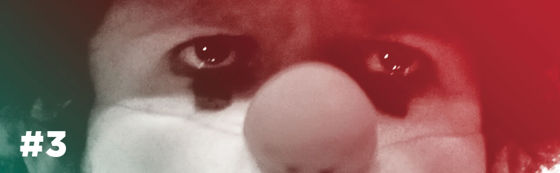

ISSN 2237-3381 Revista dos Cursos de Cinema do Cearte UFPEL nº3 ano 2012
apresentação
expediente
normas
edições anteriores
contatos

editorial:
Por que ler
Conseguimos manter o compromisso de publicar duas edições anuais da revista.
Orson na íntegra para tablet's
Faça o download da Revista Orson para ler offline em seu tablet ou pc/mac.
Submissão de artigos
Procedimentos e normas para publicação de artigos na Orson.
artigos sobre cinema e audiovisual
A via inversa da poética em Andrei Rublióv
Rodrigo Araújo Magalhães
Viramundo e a relação entre sujeito e verdade no documentário brasileiro moderno
Guilherme Carvalho da Rosa
O cinema é um circo
Cíntia Langie
Estilo fincheriano - uma análise a partir dos clipes de aerosmith e Billy idol
Pâmela de Bortoli Machado
Wes Anderson e a dissecação
Ana Paula Penkala e André Darsie de Oliveira
Imagens audiovisuais sobre telas: elementos técnico-estéticos nos modos de produção
Carla Schneider
Reflexões sobre música para audiovisual
Gerson Rios Leme
Coletividades e audiovisual: uma análise das perspectivas contemporâneas
Emiliano Fischer Cunha e Vanessa A. D. Valiati
O parque jurássico e a nostalgia no audiovisual: a cultura visual do cinema da memória
Ana Paula Penkala e André Darsie de Oliveira
Victor Hugo Borges entre o hermético e o visceral
Cassius André Prietto Souza
O Mekong de Apichatpong
Ivonete Pinto
o que estamos estudando
A construção narrativa em Hong Sang-Soo
Gilson José Fagundes Júnior
Um olhar ''brillante'' sobre a vida nas Filipinas
Márcio Renato Costa
o que estamos lendo
Palavra de Roteirista
Cintia Langie
Amar o cinema - amar quem ama o cinema
Ivonete Pinto
A audiovisão de Michel Chion
Gerson Rios Leme
Desenho para animação
Vivian Herzog
com quem estamos conversando
Direção de atores - Entrevista: Fátima Toledo
Josias Pereira
Roteiro - Entrevista: Linda Seger
Josias Pereira